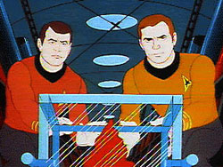

|
MANCHETE
DO EPISÓDIO
Bom
senso desaparece em segmento recheado de tecno-bubble
Episódio
anterior | Próximo episódio Sinopse:
Data Estelar: 5371.3.

A USS Enterprise é enviada sistema Pallas 14 para investigar a presença de uma
ameaça em território da Federação, e descobre a existência de uma entidade
capaz de destruir planetas, enorme e de forma gasosa. A nuvem é descoberta é
um setor inabitado, onde a tripulação da nave pode observar a entidade
envolver e destruir o planeta Alondra e, poucos segundos.
A nuvem então muda seu curso para o planeta Mantilles, cuja população é de
aproximadamente 82 milhões de pessoas. A nave segue para tentar deter a nuvem,
e ao se aproximar, puxada para o interior da entidade. As armas não surtem
efeito e a enterprise passa a ser ameaçada por pequenos casulos de anti-matéria
no interior da criatura, o que causa rápida perda de potencia dos escudos. Uma
carga de anti-matéria disparada através dos escudos da nave tem sucesso em
dissipar os casulos, mas a Enterprise permanece presa no interior da entidade.
Presos, a tripulação passa a estudar o interior da nuvem, e as pesquisas
mostram que a nuvem é um ser vivo, sem, contudo poder determinar a mesma é
inteligente e que os objetos que atacaram a enterprise agem como enzimas,
quebrando tudo o que entra para transformar em energia que a alimenta. Estudando
a anatomia da criatura, determina o que parece ser o sistema digestivo da
criatura, e deduz que este é o único caminho possível para a nave conseguir
sair. A Enterprise começa uma viagem através do corpo da criatura com os
escudos levados ao máximo, para proteger a nave do contato com a anti-matéria
no interior da criatura, mas esta continua a drenar a força dos escudos e
exauri-los rapidamente.
Scotty imagina então uma forma de regenerar a força da nave, usando parte do
corpo da criatura, que é basicamente anti-matéria, como fonte de energia. Ele
cria um tipo de campo de contenção para receber um pedaço da criatura que
cortado com os fasers da nave e levado para dentro usando o tele-transporte, e
depois utilizado como combustível.
Com a força recuperada, Kirk decide que precisa destruir a criatura, pois a
mesma ainda está indo direto para Mantilles, e não há como evacuar toda a
população do planeta a tempo. O plano de Kirk é disparar contra o que seria o
“cérebro” da nuvem e incapacitá-la. Spock protesta, pois trata-se de um
ser vivo, mas Kirk assume como prioridade salvar as pessoas em Mantilles. Os
dados da pesquisa de Spock dizem que não como destruir o cérebro usando apenas
as armas da nave, então Kirk decide explodir a Enterprise para deter a
criatura.
A contagem tem inicio, mas Spock tenta outra cartada. Usando o sistema de
comunicações e o tradutor universal, ambos modificados por Uhura, o vulcano
estabelece um elo mental com a criatura, e consegue fazê-la entender que
existem pessoas dentro da nave e no planeta da qual ela se aproxima. A criatura
então aceita retornar ao seu local de origem, e tanto a Enterprise quanto
Mantilles são salvos, sem a necessidade de destruir a nave ou a entidade. Comentários:
Um destruidor de planetas gigante se
aproxima do território da Federação? Não, não se trata de "The
Doomsday Machine". A Enterprise fica presa de um organismo vivo, que
ameaça digeri-la? Também não é "Immunity Syndrome" o episódio
de que queremos tratar aqui.
Já deu para perceber que “One of Our Planets is Missing” é mais uma
tentativa de trazer elementos de episódios clássicos para montar um novo
enredo, e mais uma vez a coisa não dá certo e a todo o momento a sensação de
Dejavu nos persegue, enquanto vamos viajando pelo interior da “Nuvem”
destruidora.
O segmento tenta sensibilizar a audiência trazendo a baila temas discutidos na
série, como a importância de preservação de toda a forma de vida (“Devil
in The Dark”), algo que nos leva a discussão da Primeira Diretriz ™ ,
mais uma vez, e termina mostrando o quanto a comunicação (leia-se
entendimento) é importante para a convivência pacifica. A questão e que com
apenas vinte minutos para dar o recado, fica difícil ser muito filosófico, e o
resultado final não poderia ser eficiente mesmo, pois não a tempo da audiência
criar simpatia pela “causa”.
Mas se o episódio é pobre em sua trama central, é muito rico em “trek
bobagens”, começando pela criatura cujo interior é formado de anti-matéria,
conceito intrigante de tão fantástico que é. Tal imaginação é amplificada
ao ponto de conceber que Scott seja capaz de cortar um pedaço (de anti-matéria)
da criatura, usar tele-transporte para trazer este pedaço para o interior da
nave e com ele regenerar os motores da nave, bem no ultimo momento. Mas nada
disto supera o prodígio realizado por Uhura e Spock, a primeira adaptando o
sistema de comunicações e o tradutor universal de forma a permitir que Spock
pudesse realizar um “Elo mental” com a nuvem, salvando o dia. Realmente incrível.
O sucesso de qualquer obra Sci-fi dependerá de uma cumplicidade entre audiência
e os criadores da obra em questão. Espera-se da audiência uma dose de
“suspensão de descrença” que permita aceitar certas situações que não
fazem parte de nossa realidade, e por outro lado, espera-se que o criador da
obra proponha este exercício de “viajar” na imaginação.
Mas deve-se entender e respeitar o limite entre Criatividade (capacidade
criadora, aptidão para formular idéias criadoras; originalidade;
engenhosidade) e da Imaginação (pensamento imaginário; fantasia; crença fantástica;
devaneio). Ambos os conceitos embora próximos, são distintos e não devem ser
confundidos, sob pena de o resultado final conter um excesso de elementos fantásticos
que o tornem de certa forma, falso, e é isto que acontece aqui, em “One
of Our Planets is Missing”. Citações:
Kirk: "Spock, is it possible this cloud is
consuming planets?"
("Spock, é possível que esta nuvem esteja consumindo planetas?")
Scotty: "Captain, I don't know how much more emergency power we can take
before we start to break up."
("Capitão, eu não sei quanto tempo mais poderemos a força de emergência
antes de nos partir em pedaços.")
Kirk: "Am I doing the right thing, Bones? Once I said that man rose
above primitiveness by vowing, 'I will not kill today."
("Eu estou fazendo a coisa certa, magro ? Uma vez eu disse que o homem se
elevou além do “primitivismo” ao dizer: “Eu não matarei hoje.”) Trivia:  Marc Daniels, que escreveu o roteiro deste episódio, dirigiu ao todo quinze
episódios da Série Clássica, entre eles "The Naked Time",
"Court Martial", "The Menagerie, Part I", "Space
Seed", "The Doomsday Machine", "The Changeling",
"Mirror, Mirror" e "I, Mudd". Daniels teve uma
carreira de sucesso como diretor em TV, cinema e teatro, vindo a falecer em 23
de Abril de 1989, aos 77 anos.
Marc Daniels, que escreveu o roteiro deste episódio, dirigiu ao todo quinze
episódios da Série Clássica, entre eles "The Naked Time",
"Court Martial", "The Menagerie, Part I", "Space
Seed", "The Doomsday Machine", "The Changeling",
"Mirror, Mirror" e "I, Mudd". Daniels teve uma
carreira de sucesso como diretor em TV, cinema e teatro, vindo a falecer em 23
de Abril de 1989, aos 77 anos.
A história deste segmento lembra em muito o episódio clássico "Immunity
Syndrome". Outro episódio clássico que pode ter ajudado a
“inspirar” este segmento, foi "The Doomsday Machine", onde
a Enterprise também encontra um destruidor de planetas. Doomsday foi dirigido
por Marc Daniels. A trama seria novamente reciclada nos episódios da Série Voyager
"The Cloud" e "Bliss”.
O comodoro Robert “bob” Wesley apareceu no episódio da Série Clássica,
"The Ultimate Computer", sendo interpretado pelo ator Barry
Russo. Neste segmento James Doohan emprestou sua voz e talento ao personagem.
Primeira aparição do Tenente Arex, um “Tripodal” - espécie com três
pernas e três braços -. Ao todo, Arex esteve presente em quartoze episódios
da Série Animada, e sua voz era uma das muitas dublada por James Doohan.
A certa altura do episódio, quando Kirk e Spock discutem a destruição da
nuvem, o capitão cita a frase Today I will not kill.", usada por ele no episódio
"A Taste of Armaggeddon" , da primeira temporada da Série Clássica.
As cenas que mostram crianças brincando com um cachorro na Terra foram
retiradas do seriado “Lassie”.
"One of Our Planets Is Missing" foi novelizado por Alan Dean
Foster em 1974.
Ficha
técnica: Escrito por
Marc Daniels
Direção de Hal Sutherland
Exibido 11/09/1973
Produção: 07 Elenco:
William Shatner como James Tiberius Kirk
Leonard
Nimoy como Spock
DeForest Kelley como Leonard McCoy
James
Doohan como Montgomery Scott
George Takei como Hikaru Sulu
Nichelle Nichols como Uhura
Elenco convidado:
Majel Barrett como Nuvem Cósmica
James Doohan como
Wesley
James Doohan como
Tenente Arex
Episódio
anterior | Próximo episódio
|